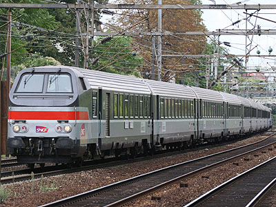

Corail
le Confort sur Rail
Les Corail sont, et resteront sans doute, la dernière génération de voitures d'Express et de Rapides mises en service par la SNCF. Dans le futur, le transport de voyageurs sera confié en exclusivité à des automotrices (bien que le cas des trains de nuit n'est toujours pas tranché).
Sous un nom unique, la famille Corail regroupe en réalité trois familles* de voitures tout à fait différentes auxquelles on peut ajouter
un quatrième groupe, les fourgons MC76.
Ces familles sont, par ordre croissant d'importance :
- les VSE (100 voitures + 2 protos), très proches des "UIC Z" construites par de nombreux pays Européens,
- les VU (1478 voitures + 3 protos) à couloir latéral qui, elles-mêmes, sont divisées en deux sous-familles de chaudrons,
- les VTU (2335 voitures + 1 proto) à couloir central.
* (Il est à noter qu'une famille de "Super Corail" à deux niveaux fut envisagée. Bien qu'abondonnée, cette étude a inspiré le TGV Duplex. Et, après une large revue à la baisse de ses ambitions, a finalement abouti aux VE2N destinées davantage aux relations interrégionales qu'aux Express nationaux.)
Alors pourquoi rassembler toutes ces voitures sous le nom "Corail"? L'approche était avant tout marketing. Les différentes familles de Corail bénéficient d'une étude commune du designer Roger Tallon qui décide de casser les codes du Chemin de fer traditionnel (coloris, matériaux, dessin du mobilier et ambiance lumineuse, signalétique). Un effort important est aussi mené pour améliorer le confort dynamique, accoustique et d'apporter la climatisation à cette nouvelle génération de voitures.
Contexte de leur génèse
A la fin des années 1960, la SNCF possède un parc de voitures pour Express assez hétéroclite : plusieurs grandes séries de voitures conçues par la DEV (Division d'Etudes Voyageurs) peintes en vert ou en inox aptes à 140 ou 160 km/h, un nombre plus modeste de voitures inox destinées aux TEE (TransEuropExpress) dotées de la climatisation et aptes à 160 km/h. Mais aussi de nombreuses séries métallisées ou métalliques qui datent d'avant la création de la SNCF. Enfin, elle réceptionne les Grand-Confort, aptes à 200 km/h et climatisées.
L'objectif du programme Corail est de proposer un matériel Express pour le régime International ou le Service Intérieur qui présente un confort similaire aux voitures TEE (Bogies à double suspension, insonorisation, climatisation y compris en 2nde classe), tout en ayant des coûts d'acquisition et d'exploitation plus raisonnables et un gain de performance par rapport aux voitures d'express plus anciennes (généralisation de l'aptitude à 160 km/h, possibilité d'atteindre 200 km/h, légèreté des voitures). La mise en service de ces voitures permettant, par un jeu de chaises musicales, de déclasser les voitures DEV sur les trains moins nobles afin d'amortir les séries les plus anciennes datant des années 1930 ainsi que les voitures métallisées engagées sur des trains omnibus.
La SNCF seule contre tous
D'autres administrations ferroviaires Européennes entament les mêmes démarches et le groupement Eurofima met au point le programme VSE, point de départ à la grande famille des UIC Z. Cette famille est courante dans les effectifs des Chemins de fer Allemands, Autrichiens, Belges, Suisses ou Italiens. En revanche, la SNCF participe timidement en ne commandant que deux voitures A4B6u de pré-série puis une courte série de 100 voitures de première classe A9u à couloir latéral : les VSE.
Elle vise plutôt à généraliser les voitures à couloir central, dont l'expérience à été menée avec les DEV Inox, les DEV USI et les turbotrains. Elle commande alors massivement des VTU. Toutefois, elle étudie des voitures à couloir latéral qui reprennent quelques caractéristiques des UIC Z (chaudrons de 26,400 m, climatisation, compartiments à six places de front) tout en étant plus économiques (Portes pliantes, étude d'un chaudron "Super Large" pour permettre des compartiments de 2e classe à huit sièges, nombreux organes communs avec les VTU, dont les bogies Y32).
Les VU sont destinées à une grande variété d'usages (voitures à compartiments places assises, voitures couchettes, mixtes fourgon, voitures pilote) et possèdent un nombre important de chaudrons différents. A l'inverse, les VTU possèdent toutes des chaudrons identiques à quelques détails près en fonction de l'usage et du programme de construction.
Parmi les nombreux chaudrons de VU, le plus atypique est la voiture pilote B6Dux
Carrière
Si les Corail se démarquaient par leurs coloris ou leur niveau de confort, elles ont aussi bouleversé l'exploitation des express SNCF par le nombre de voitures construites et la cadence, jamais vue auparavant, de leurs mises en service. La fin des années 1970 a donc vu un retrait massif des DEV USI et UIC des principaux Rapides pour être rabattues sur les Express. Les séries plus anciennes de la DEV ne se voyant guère plus confier que des trains supplémentaires ou régionaux et les séries héritées des anciens réseaux se voyant purement et simplement poussées à la réforme.
La livraison de voitures aptes à 200km/h, permit également de créer de nouveaux Rapides qui venait titiller les TEE. Enfin, les VU couchettes remplacèrent progressivement les DEV et UIC, poussées elles aussi sur les trains de pointes saisonnières.
Un contingent de voitures fut dédié pour former des rames réversibles conduites par des Corail VU B6Dux. La première série de ces voitures pilotes utilisant une technologie filaire, il fallait des voitures spécifiquement pourvues des câblots nécessaires. Après avoir assuré des Paris-Tours-Poitiers avec des BB 9200, elles parcourent aujourd'hui Paris-Rouen-Le Havre avec des BB 16000, puis de BB 15000.
Sur le Sud-Est, la montée en charge du TGV prive toutefois le matériel classique de relations importantes dès le début des années 1980. L'apogée des grands Rapides en Corail s'achève dans les années 1990. Le TGV Atlantique provoque un effet bien plus fort qui sera suivi par les ouvertures des LGV Paris-Lille et du prolongement de la LGV Sud-Est jusque Valence. Les Corail roulent déjà depuis 20 ans quand il est décidé de les mettre à niveau.
Rénovations Corail+, Corail Nouvelle Déco, Téoz
Le programme Corail+ concerne 710 voitures transformées à partir de 1995 et destinées aux axes Grandes Lignes où le TGV ne les menace pas. Les coloris s'inpirent des codes couleur initiés par le TGV Atlantique. La transformation de ces voitures comprend l'installation coûteuse de toilettes à rétention. Par souci d'économies, la rénovation (Corail Nouvelle Décoration) des voitures suivantes est simplifiée. Les toilettes d'origine sont conservées et le schéma de peinture prévoit des portes d'une seule couleur.
B11rtu 50 87 21-97 762-9, Prototype Corail+ (Paris Austerlitz, 30/12/2001)
Pourtant, dès 2000, une étude est menée pour imaginer une remise à niveau plus ambitieuse : les TRD (Trains Rapides de Demain). Une rame de démonstration prévoit un nouveau mobilier et la création d'espaces de service innovants. Il faut trois ans pour parvenir à mise en service de ce matériel profondément revu : Les Téoz.
Toutes les voitures affectées aux Rapides et Express nationaux subissent actuellement une rénovation en livrée Carmillon.
Régionalisation
Le recul des Corail devant le TGV provoque la bascule d'un important contingent vers les directions régionales. Les Corail se voient confier deux services TER à 200km/h (TER Alsace et Interloire exploité par les régions Centre et Pays de la Loire). La région Rhône-Alpes exploite également des rames de Corail, dont les voitures pilotes B6Dux VU 86 à commande multiplexées.
La régionalisation s'intensifie à la fin des années 1990. Les régions Centre, Picardie, Languedoc-Roussillon, Midi-Pyrénées, Bourgogne entâment la rénovation de voitures Corail avec les coloris TER adoptés sur les automoteurs de nouvelle génération.
La desserte Paris-Orléans-Tours est renommée Aqualys et bénéficie d'un programme de rénovation particulier.
Régionalisation, acte II
D'autres régions (Franche Comté, Lorraine, Aquitaine, PACA) ou groupes de régions poursuivent sur cette lancée. Lors de l'ouverture du TGV Est, les régions Champagne-Ardennes, Lorraine et Picardie se sont associées pour organiser les TER Vallée de la Marne, permettant le cabotage entre Paris-Epernay-Bar le Duc et St Dizier.
Une nouvelle activité "Corail Intercités" est créée. Elle regroupe les trains interrégionaux de moyenne distance. Un sticker est d'abord posé sur les voitures Corail+ ou ND. Trois nouvelles livrées grises à motifs verts et violet sont inaugurées.
L'usage du pelliculage, en vogue sur les automoteurs, est réalisé par les régions Alsace, Languedoc-Roussillon et Bourgogne.
Fin de carrière
Depuis que les dernières DEV USI et UIC ont quitté la scène en 2008, les Corail sont à leur tour victimes de purges dans leurs effectifs. Les voitures Grandes Lignes poussées par les TGV Duplex toujours plus nombreux et les régionales par les AGC, TER2NNG et surtout par les Régiolis et Regio2N. Les voitures couchettes, rénovées partiellement par le programme Lunéa, puis Intercités de Nuit, subissent la chute de fréquentation des trains nocturnes.
Le remplacement des Corail n'est pas encore décidé sur nombre de lignes. Le regroupement de toutes les activités en matériel tracté hors TER au sein de l'activité Intercités leur offre un répit avec une ultime rénovation qui, dans certains cas, reste une opération cosmétique modeste. L'arrivée du Coradia Liner, cousin Grandes-Lignes du Régiolis fera tomber les premières voitures. Une décénie au mieux est promise aux voitures qui ont subi un lifting plus approfondi.
Pour plus d'info :
La fiche Voiture Corail
sur Wikipedia.
Les Corail sur Trains-Europe.
VSE A9u (Villeneuve-Prairie, 15/05/2005)

VU B5Dd2ux n° 61 87 82-70 509-8 (Villeneuve-Prairie, 08/12/2002)

VTU B11tu 21-77 022, sigle Tallon (Paris St Lazare, 07/03/2003)
VTU B10tu n°50 87 20-82 201-6 à portes Faiveley,
en livrée Corail+ (Paris-Est, 20/08/2002)

Cette B6Dux VU75 fonctionne encore pour peu de temps en réversibilité par câblots avec une BB 16000 (La Garenne-Colombes, 07/09/2008)
VTU A10tu à portes Faiveley, en livrée Nouvelle Déco (Paris-Est, 03/07/2003)